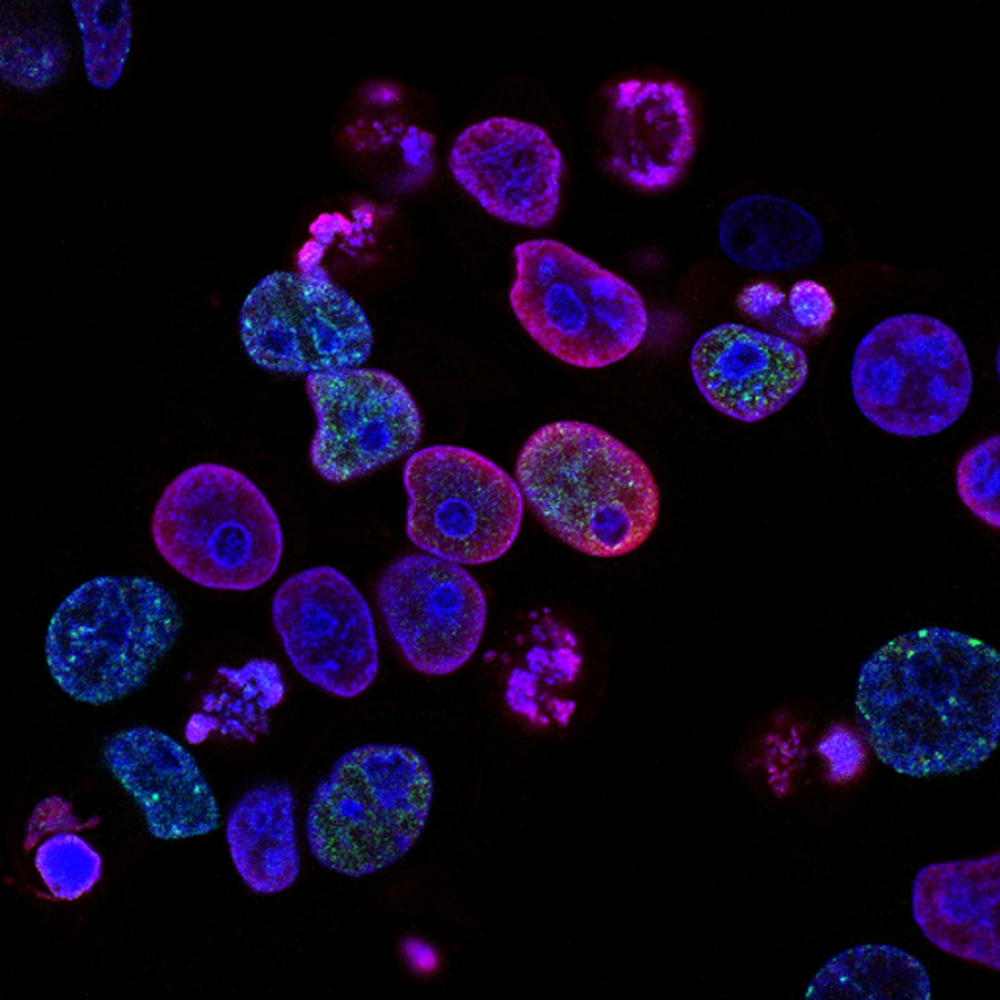
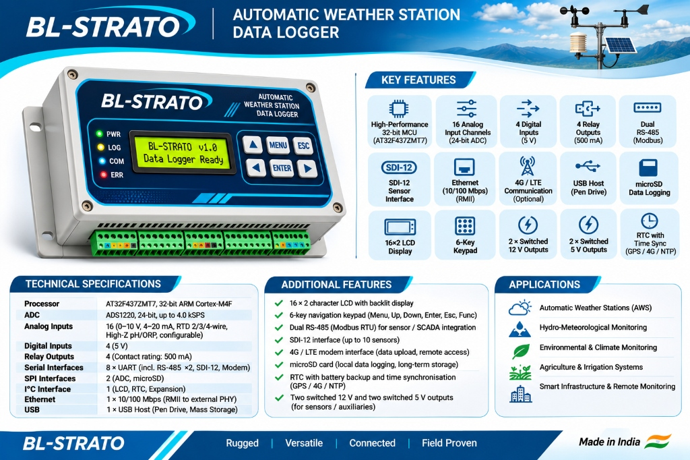
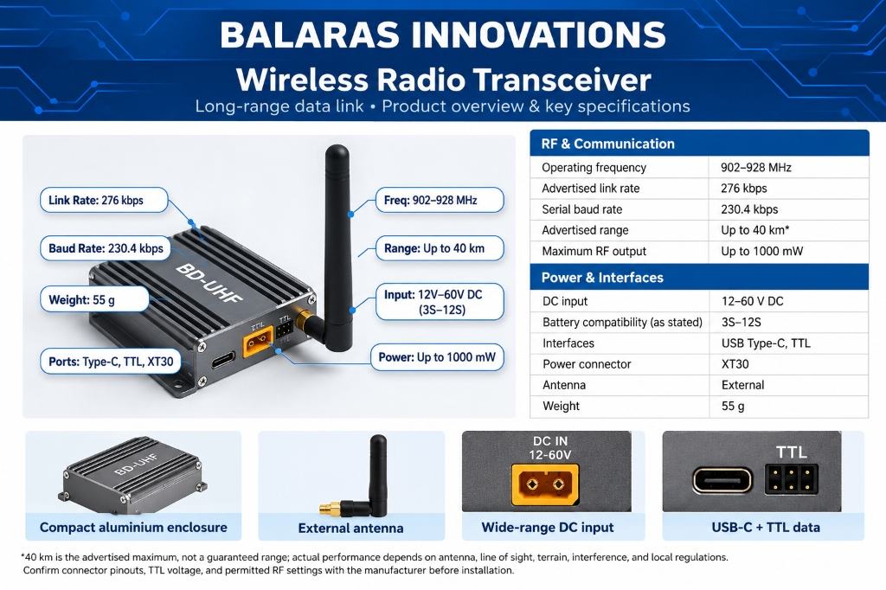
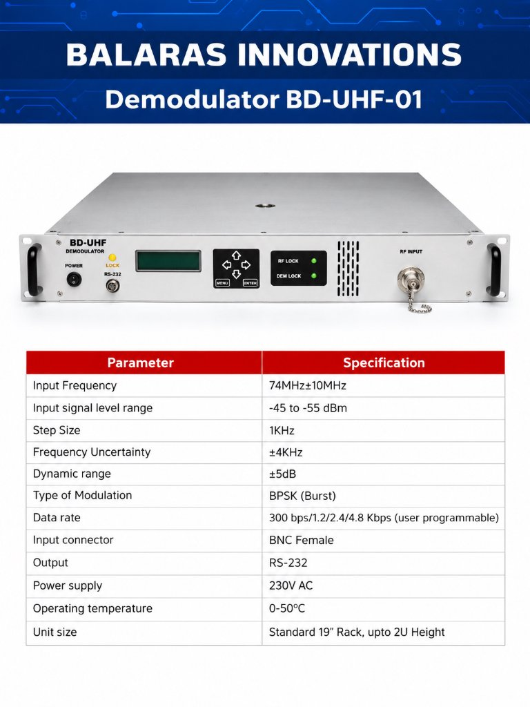
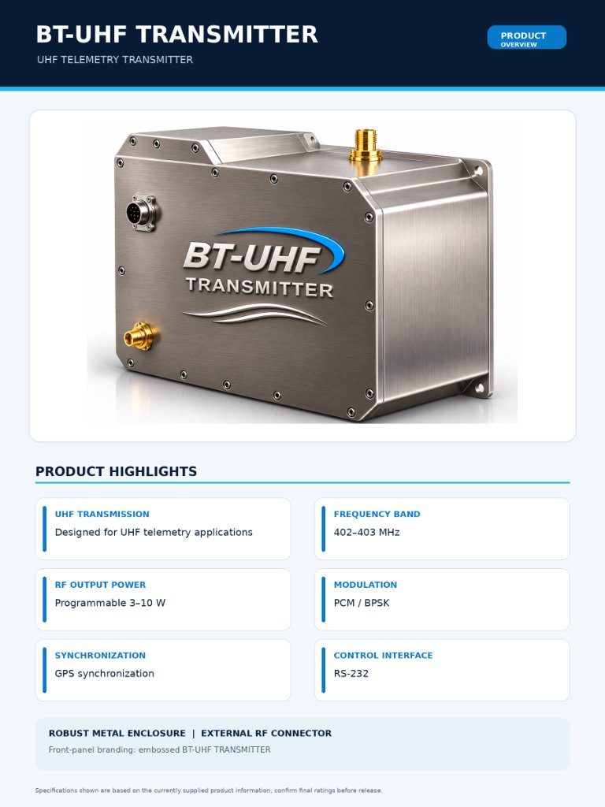
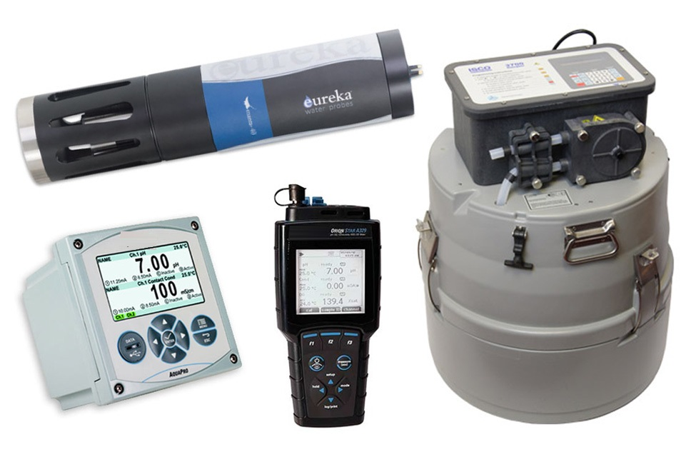
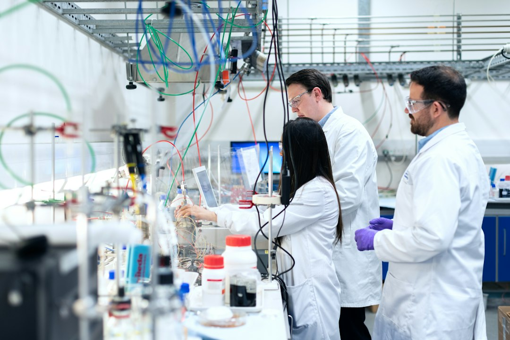
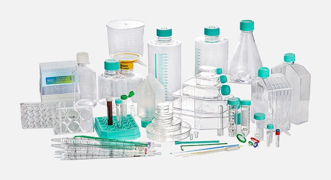
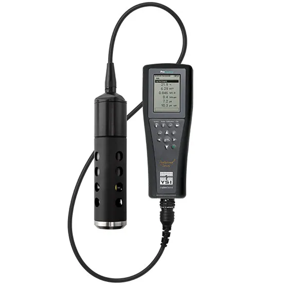

Precision WaterTesting Equipment
A trusted manufacturer and supplier of high-precision water testing equipment, chemicals, and reagents.
EnvironmentalAnalysis Equipment
Advanced automatic weather station data loggers, UHF telemetry transmitters, transceivers, and demodulators for precision field monitoring.
Lab & ResearchAnalytical Solutions
Equipping high-end research laboratories with precision glassware, reagents, analytical test kits, and specialized instruments.
Industrial & ProcessMonitoring Systems
Optimizing industrial water treatment, manufacturing workflows, and compliance with continuous online process monitors.
Real-Time Cloud IoT Dashboard
Access online water quality telemetry, automated sensor metrics, real-time alerts, and diagnostic data visualizers 24/7.





WHO ARE
WE?
We are a team of specialized professionals with extensive expertise in Water Analysis, Environmental Analysis, Medical, Biotechnology, Laboratory and Educational Sectors
Water Quality Solutions
We supply comprehensive water quality testing equipment including handheld meters, multiparameter sondes, CTDs, and automatic water samplers.
Laboratory Accessories
Our precision laboratory equipment encompasses desiccators, hotplates, micropipettes, pipetting aids, circulating baths, and weighing balances.
Laboratory Consumables
Premium wholesale laboratory consumables. High-quality, precisely manufactured plastic consumables with fast and reliable delivery.



Your Partner forStrategic Innovation
We go beyond supply. We build long-term partnerships, offering strategic guidance and unwavering technical support to help your business achieve its quality and environmental goals.

Handheld Meters & Sensors
Portable precision for on-site water quality analysis.
Multiparameter Sondes
Advanced probes for comprehensive water profiling.
Automatic Water Samplers
Reliable automated sampling for compliance and research.
Online / Process Monitors
Continuous monitoring for industrial and municipal water.
Sectors We Serve
Providing specialized water testing solutions tailored to the unique demands of every sector.
Environmental Analysis
Monitoring water quality, hydro-meteorological parameters, and telemetry in natural ecosystems, lakes, and rivers with precision field equipment.
Industrial & Process
Optimizing industrial water treatment and manufacturing processes with continuous online monitors.
Lab & Research
Equipping high-end laboratories with professional-grade reagents, test kits, and analytical tools.
Featured Telemetry & Data Logging Systems
Click any specification sheet to view in full screen
BL-Strato DataLogger
32-bit ARM Cortex-M4F logger with 16 analog channels (24-bit ADC), SDI-12, Dual RS-485 (Modbus), Ethernet, and 4G/LTE telemetry.
BX-TRx Telemetry
902–928 MHz long-range data link transceiver (up to 40 km, 1000 mW RF output) with USB Type-C, TTL, and wide 12–60V DC input.
BD-UHF Demodulator
74MHz±10MHz BPSK (Burst) demodulator with programmable data rates (300 bps to 4.8 Kbps) in a standard 19" rack unit.
BT-UHF Transmitter
402–403 MHz UHF telemetry transmitter with programmable 3–10 W RF output power, PCM/BPSK modulation, GPS sync, and RS-232 control.
Innovative StrategiesExceptional Service
Our approach integrates cutting-edge technology with deep industry expertise. We pride ourselves on our commitment to customer satisfaction and operational excellence, providing tailored solutions to drive your success.
Get in Touch
Have a question or a project in mind? We'd love to hear from you.
Request a Quote
Direct response from Balaras Innovations technical sales engineers.